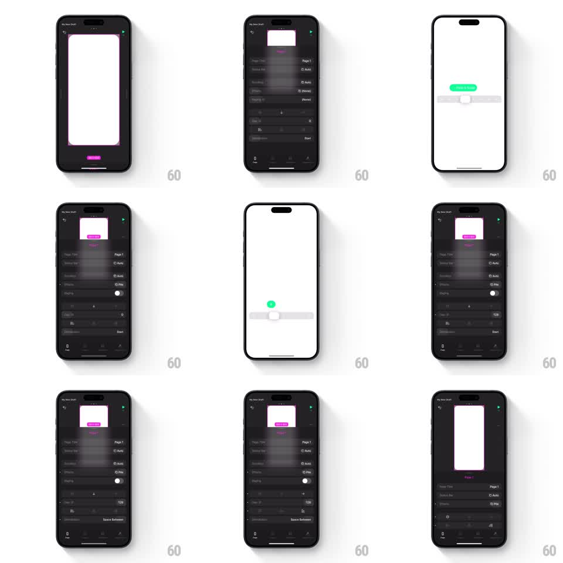

Media
Frame-by-frame

Rebuild this interaction 1:1: Play's page settings - opening settings scales the canvas down and rises a dark bottom-sheet panel of page properties with scrubbable sliders whose value badges float above the thumb.

Rebuild this interaction 1:1: Play's page settings - opening settings scales the canvas down and rises a dark bottom-sheet panel of page properties with scrubbable sliders whose value badges float above the thumb.
## Integration
Integration: stack-agnostic spec - springs given as stiffness/damping, timed motions as duration + curve; map every value to your framework and animation library of choice.
## Scene
The editor: a white page canvas ("Page 1", pink selection outline) on a near-black workspace. Open state: the canvas scales down and docks to the top half while a dark sheet fills the bottom - rows for Page Title, Status Bar, Prefers... (Auto/Pills toggles), Paging switch, and scrub sliders. While scrubbing, a light floating badge ("SPEED SCALE", green pill) appears above the slider thumb showing the live value.
## Motion spec
Pattern: canvas scale-down with sheet rise and live-badge sliders.
- Tap the settings control: the canvas scales to ~0.55 and slides up (spring stiffness ~280, damping ~28) while the sheet rises from the bottom to meet it (same spring, synced).
- Sheet rows stagger in top to bottom (40ms apart, 200ms fade+rise).
- Scrubbing a slider: the thumb tracks 1:1, and a floating badge springs up above the thumb (scale 0.6 to 1.0, spring ~400/24), updating its value live; on release the badge pops away (150ms).
- Toggles flip with a 150ms slide; segmented options swap highlight with a 200ms slide.
- Close: the sheet slides down (250ms, ease-in) and the canvas springs back to full size.
## Calibration
- Canvas and sheet move as one choreographed pair - same spring, same duration, opposite directions.
- The badge only exists while scrubbing; never leave it lingering.
## Reduced motion
Canvas crossfades to the docked layout; sliders update without badges.
## Don't miss
- The canvas keeps its pink selection outline while docked - it is still the live page, not a thumbnail.
- Badge typography is compact caps on a bright pill - readable at a glance mid-drag.